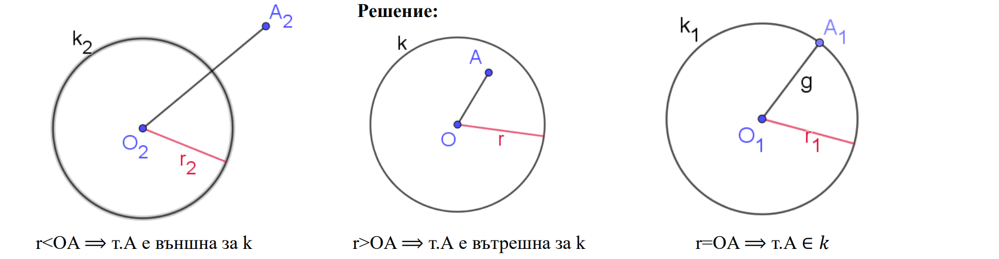
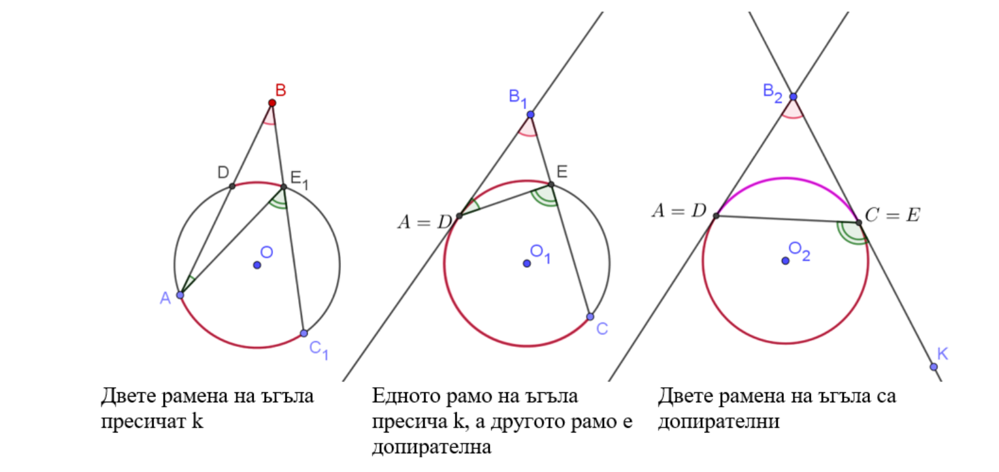

Критерии за взаимното положение на точка и окръжност:
т. А лежи на k(O;r)⟺ OA=r
т. А е вътрешна за k(O;r)⟺ OA r
т. А е външна за k(O;r)⟺ OA>r
Теорема Ъгъл, чийто връх е външен за една окръжност, а раменете му имат общи точки с тази окръжност, се
измерва с полуразликата от дъгите, заключени от раменете му.


Ако D > 0
x1 = (-b + √D)/2.a
x2 = (-b - √D)/2.a
Ако D = 0
ax² + bx + c = a. (x - x1)²
Ако D < 0
Квадратния тричлен не се разлага на множители
| Дискриминанта 𝑫 = 𝒃² − 𝟒𝒂𝒄 | Разлагане на ax2+bx+c |
| D > 0, т.е. два различни корена x1,2 на квадратното уравнение ax2+bx+c=0 | ax2+bx+c=a.(x-x1)(x-x2) |
| D = 0, т.е. един двоен корен x1 на квадратното уравнение ax2+bx+c=0 | ax²+bx+c=a.( x-x1)² |
| D < 0, т.е. квадратното уравнение ax2+bx+c=0 няма реални корени | ax²+bx+c не се разлага на множители |